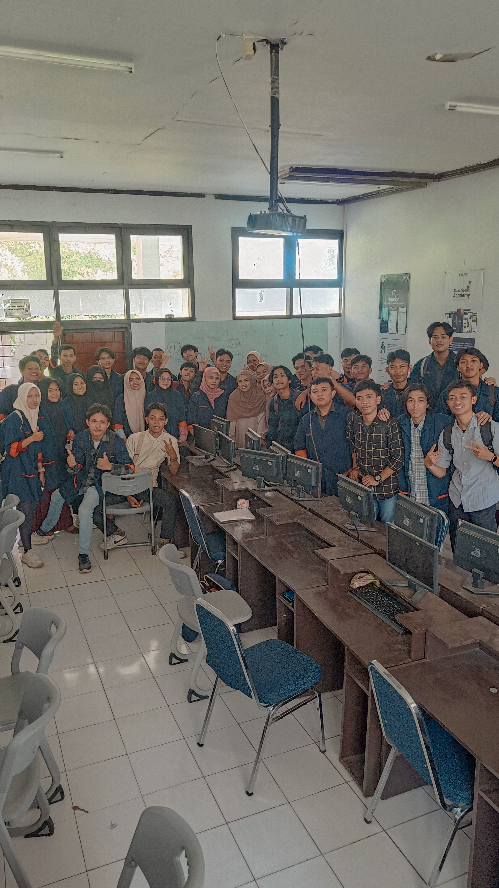
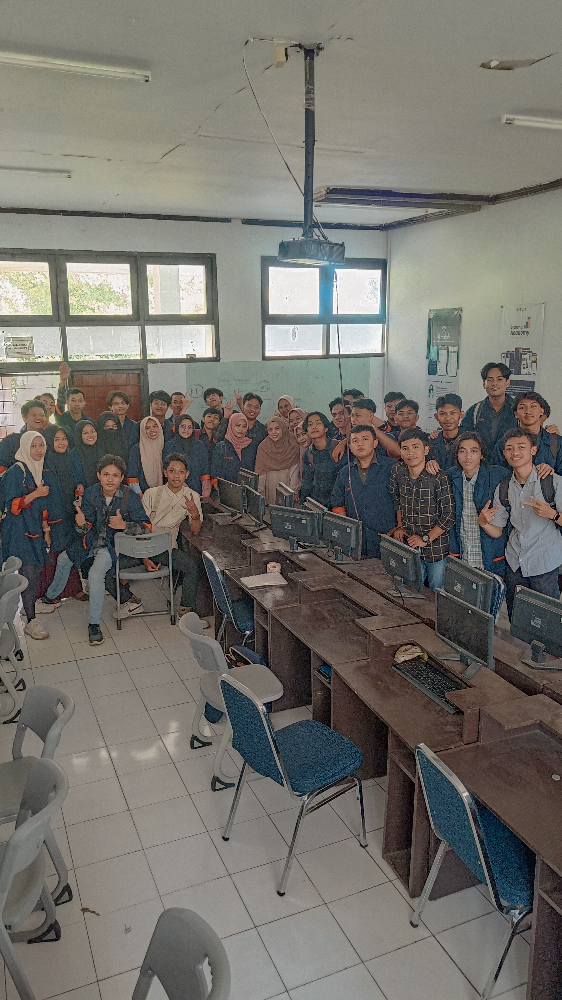

Nama : Adam Ramadhan
NIM : 220209501059
Kelas : PTIK C
Alamat : Ling. Tobonggae, Kec. Camba, Kab. Maros
Alamat : Jalan Mangga 3, Nusa Tamalanrea Indah, Kota Makassar
Sekolah Asal : SMA Muhammadiyah 19 Camba
Universitas Negeri Makassar
Jika Tidak Bisa Menjadi Yang Terbaik, Setidaknya Jangan Jadi Yang Terburuk
SERU
Pada saat pertama kali saya masuk kuliah, saya merasa sangat asing dengan lingkungan baru saya. Saya tidak punya teman dari kampung yang satu jurusan sama saya. Mereka semua berbeda jurusan dengan saya. Akan tetapi, saya harus menahan rasa malu saya untuk berkenalan dengan orang lain karena saya sendiri seorang introvert. Sebagai seorang mahasiswa baru, saya merasa sedikit gugup dan merasa tidak percaya diri. Hari pertama di kampus adalah momen yang sangat menggugah hati. Saya datang dengan seragam universitas yang baru saja saya beli. Suasana kampus begitu hidup, dengan mahasiswa lain yang juga tiba untuk tahun pertama mereka. Saya merasa sedikit canggung, tetapi cepat berkenalan dengan beberapa teman sekelas. Kami bertukar cerita tentang asal daerah kami dan mengobrol tentang mata kuliah yang akan kami hadapi.
Selama beberapa minggu pertama, saya merasa seperti sedang berada di dalam pusaran informasi. Jadwal kuliah yang padat dan tugas-tugas yang harus diselesaikan membuat hari-hari saya penuh dengan belajar. Saya belajar cara mengatur waktu dan beradaptasi dengan kehidupan sebagai mahasiswa. Salah satu hal yang saya nikmati adalah bertemu dengan berbagai macam orang. Kampus ini merupakan tempat yang sangat beragam, dengan mahasiswa dari berbagai latar belakang etnis, budaya, dan kehidupan. Dari sini, saya mulai belajar bergaul dengan orang lain lebih percaya diri.
Menjadi mahasiswa juga berarti menghadapi tantangan. Ada saat-saat ketika saya merasa kewalahan oleh tekanan karena tugas atau merasa stres menjelang ujian besar. Namun, saya selalu memiliki dukungan dari teman dan keluarga yang selalu siap membantu. Saya belajar memahami bahwa penting untuk mencari bantuan ketika diperlukan dan tidak malu untuk bertanya. Ada kalanya saya merasa saat kuliah itu menyenangkan, ketika bertemu dengan teman-teman sekelas dan bisa bercanda bersama dan melepaskan tawa bersama. 2 semester telah berlalu, akan tetapi saya merasa bahwa apa yang saya pelajari selama 2 semester lalu, tidak terlalu meresap di otak saya. Saya merasa ada yang kurang dari semua pembelajaran di 2 semester tersebut. Saya berharap disemester 3 ini, saya bisa lebih mencerna semua pembelajaran dan membuka lebih luas wawasan saya.
Daftar Mata Kuliah Yang Telah Dipelajari
- Struktur Data
- Pemrograman Web
- Inovasi Teknologi
- Kecerdasan Buatan
- Jaringan Komputer
- Profesi Kependidikan
- Keamanan Komputer
- Strategi Pembelajaran
Daftar Dosen
- Auliyah Zakilah Ifani, M.Kom
- Dyah Darma Andayani, S.T., M.Tel.Eng
- Dyah Vitalocca, S.T., M.Pd.
- Alifya Nfh, S.Pd., M.Pd.
- M. Miftach Fakhri, S.Kom., M.Pd.
- Dr. Ir. Yasdin, S.Pd., M.Pd., M.Sc., M.Pd.
- Prof. Dr. Ir. Iriana Tangkin Mangesa, MT.
Foto Kegiatan

 

My Portofolio

| No | Nama | Jenis Kelamin | Alamat | Asal Sekolah | |
|---|---|---|---|---|---|
| Lengkap | Panggilan | ||||
| 1 | Adam Ramadhan | Adam | Laki-laki | Nusa Tamalanrea Indah | SMA Muhammadiyah 19 Camba |
| 2 | A. M. Yusran Mazidan | Yusran | Laki-laki | Minasaupa | SMK Negeri 1 Rangas Mamuju |
| 3 | Ainun Fadillah Agus | Ainun | Perempuan | Gowa | SMA Negeri 3 Makassar |
| 4 | Akmar Akilah Kautsar | Akmar | Laki-laki | Jln. Emmy Salean | SMA Negeri 1 Pangkep |